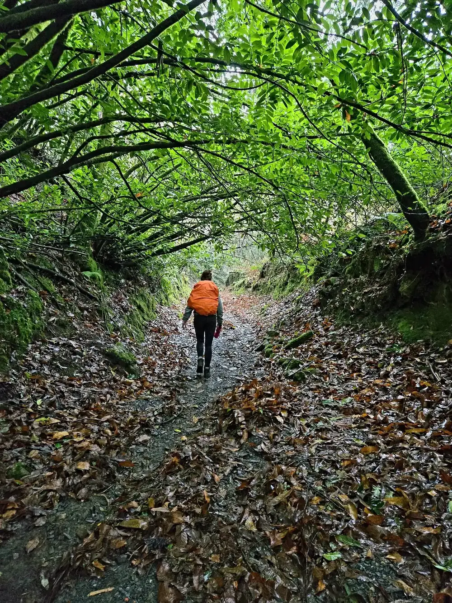
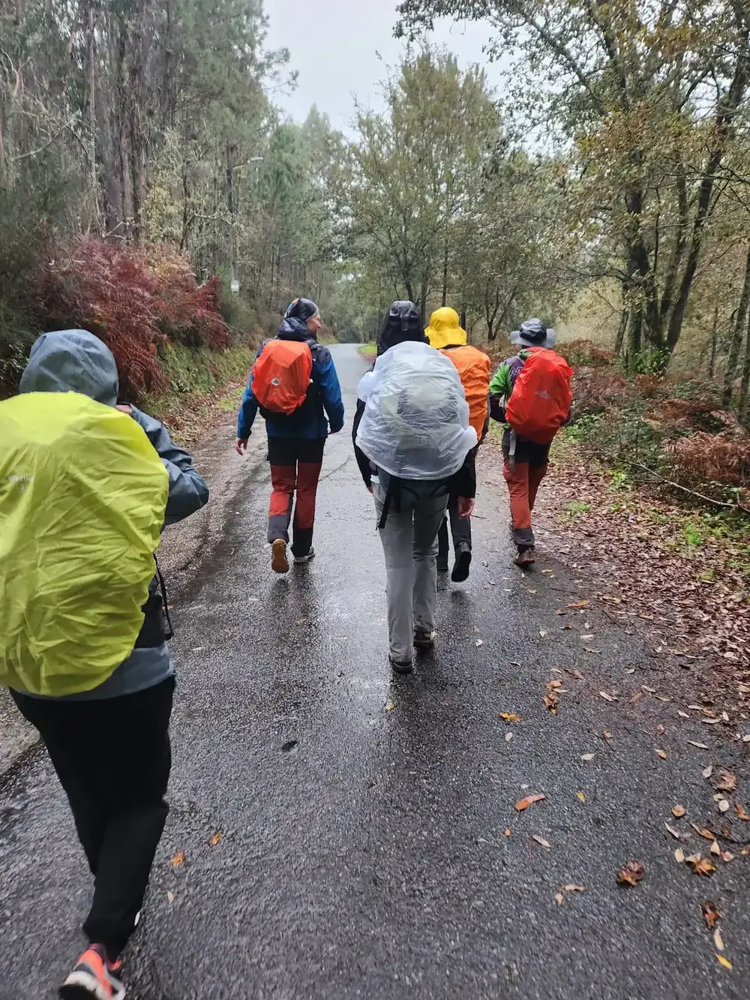
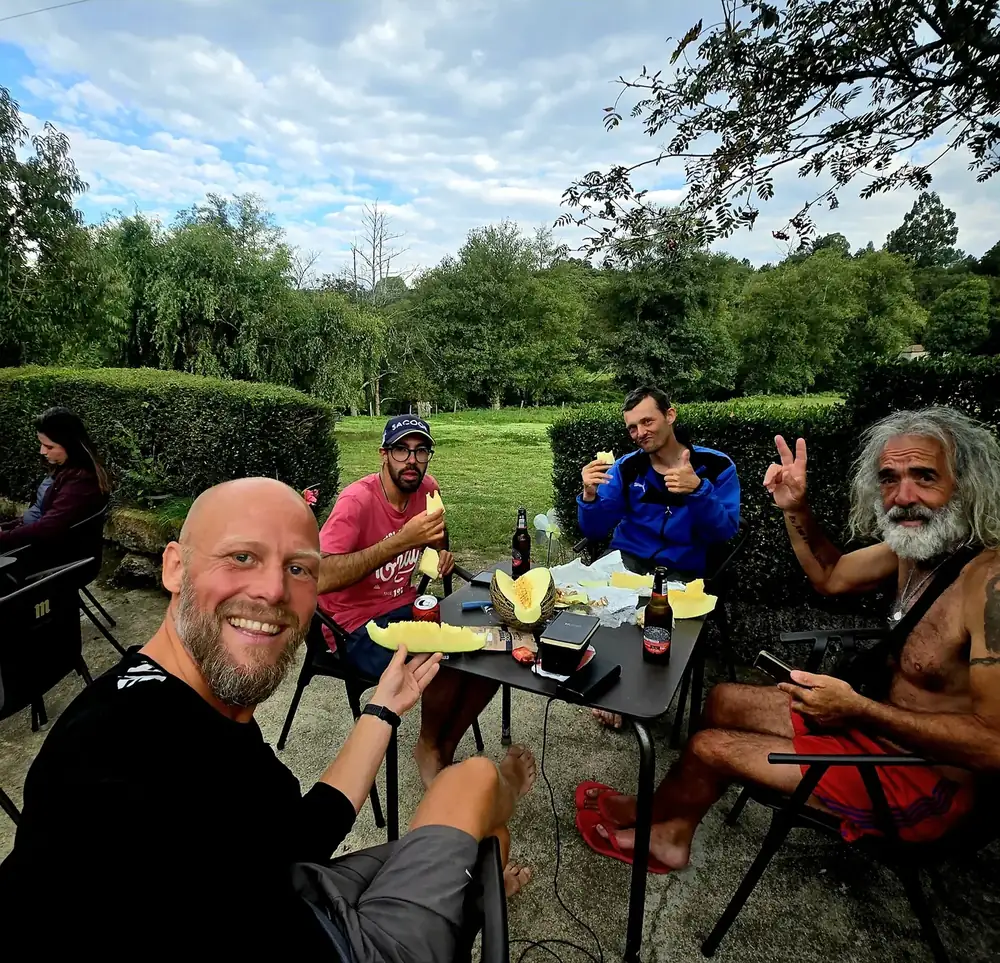
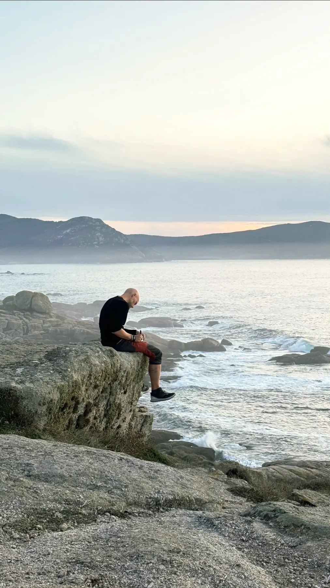

Kort innsjekk. Dagens ramme. Ett lite fokus.A short check-in. The day's frame. One small focus.
02 · UnderDuring
SER
Selvverd · Egenkraft · Retning. Du går en virkelig Camino – med frihet til å finne din rytme og mennesker i nærheten når du trenger dem.Self-worth · Agency · Direction. You walk a real Camino – with freedom to find your rhythm and people nearby when you need them.

En dag om gangenOne day at a time
Gå. Hvil. Snakk. Vær stille. Begynn igjen i morgen.Walk. Rest. Talk. Be quiet. Begin again tomorrow.
SER er bevisst enkelt. Dagen har en rytme, men du trenger ikke være sosial hele tiden eller prestere for å høre til.SER is deliberately simple. The day has a rhythm, but you do not need to be social all the time or perform in order to belong.
Gå, hvil, prat eller vær stille. Støtte er i nærheten.Walk, rest, talk or be quiet. Support is nearby.
Mat og hvile. Én enkel tanke: Hva trenger jeg i morgen?Food and rest. One simple thought: What do I need tomorrow?

Frihet innen trygge rammerFreedom within safe boundaries
Du skal kunne finne din egen rytme uten å bli stående alene.You should be able to find your own rhythm without being left alone.
- På trygge partier kan du gå alene, i par, i stillhet eller i samtale.On safe stretches you can walk alone, in pairs, in silence or in conversation.
- Pause, kortere etappe, transport og tilpasning er sikkerhetstiltak – ikke nederlag.Rest, a shorter stage, transport and adaptation are safety measures – not failure.
- Ingen krav om personlig deling. Samtaler oppstår når de er nyttige, ikke fordi noen må prestere åpenhet.No requirement for personal disclosure. Conversations happen when useful, not because anyone must perform openness.

Fellesskap kan være et måltid eller en kort samtale.Community can be a meal or a brief conversation.

Stillhet er også deltakelse.Silence is also participation.
Sammen – uten prestasjonspress.Together – without performance pressure.
Caminoen er ikke en kulisse. Den er selve erfaringen.The Camino is not a backdrop. It is the experience itself.
Se hovedruten fra Porto mot Santiago, hvordan dagene bygges opp og hvor det er rom for tilpasning.See the main route from Porto towards Santiago, how the days are structured and where there is room for adaptation.